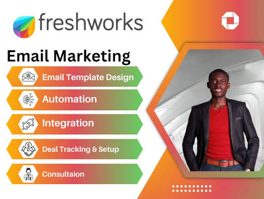
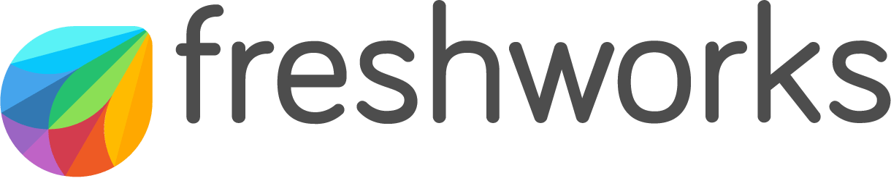

About Freshworks



Freshworks is a global software company that builds cloud-based business and AI-powered customer service tools. Founded in 2010 in Chennai, India, and headquartered in San Mateo, California, it provides simple, fast-to-deploy software for IT service management, customer support, and sales.
Freshworks Inc. is a cloud-based software-as-a-service company, founded in 2010 in Chennai, India.[2][3] The company provides cloud-based tools for customer relationship management (CRM), IT service management (ITSM), and e-commerce marketing.
Freshworks was founded in 2010 by former Zoho employees Girish Mathrubootham and Shan Krishnasamy in Chennai, India, as Freshdesk.[8][9] The company moved their headquarters to San Mateo, California, in 2018.[4] The company focuses on developing cloud-based customer service software and has undergone multiple rounds of funding from investors such as Accel, Tiger Global Management, and Sequoia Capita
Freshworks acquired three other companies, 1CLICK.io, Konotor, and Frilp, in 2015.[11] In 2016, the company launched its second product, Freshsales, a customer relationship management (CRM) software
In 2014, it launched Freshservice, an ITSM that offers software and hardware asset management, incident management, and service request tracking services.
Freshworks acquired Device42, an American IT-management firm, for $230 million in May 2024.[16][17] In the same month, Mathrubootham transitioned to the role of executive chairman, with Dennis Woodside succeeding him as CEO.
In December 2025, Freshworks agreed to acquire FireHydrant, an incident management platform powered by artificial intelligence, to expand its IT service management portfolio; the acquisition closed in January 2026.[19][20] Freshworks reported 2025 as its first GAAP-profitable year, with net income of $183.7 million on revenue of $838.8 million
In December 2025, Freshworks agreed to acquire FireHydrant, an incident management platform powered by artificial intelligence, to expand its IT service management portfolio; the acquisition closed in January 2026.[19][20] Freshworks reported 2025 as its first GAAP-profitable year, with net income of $183.7 million on revenue of $838.8 million